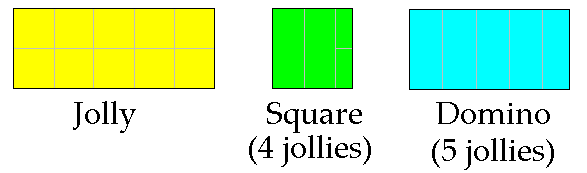
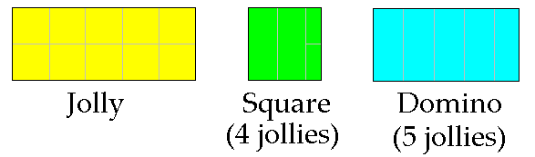
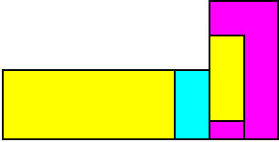
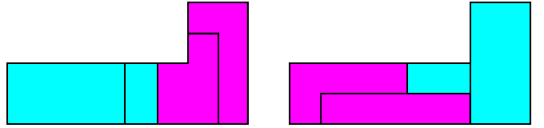
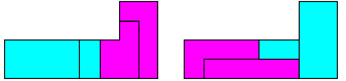

Symbiotic couples (by Claudio Baiocchi, September 14, 2008)
The notion of Jolly
Let us consider a rectangle with side-ratio 5:2, and try to split it into two copies of the
same omino. We can do that in many ways: e.g. two copies of I5, or two
copies of P5, or two copies of L5; and also two copies (at different scales) of I2.
 We will call ”Jolly for A, B” an omino splittable both as two copies of A and two
copies of B; we believe that such a notion can help to find upper bounds for the
symbiosis number of the couple (A,B).
Of course other ominoes can work as Jolly; e.g. a rectangle with side-ratio 1:3 is a
Jolly for the couple (L6,I6) as well as for the couples (L6,O6) and (I6,O6). Here we
will confine ourselves to deal with Jolly given by the rectangle with side-ratio
2:5.
We will use some combinations of our jolly as ”bricks” for build other figures; e.g. the
square-brick is the union of 4 jollies; and the domino-brick is union of 5
jollies. The following colors for jolly and bricks will help to fast interpret some
figures later on:

We will call ”Jolly for A, B” an omino splittable both as two copies of A and two
copies of B; we believe that such a notion can help to find upper bounds for the
symbiosis number of the couple (A,B).
Of course other ominoes can work as Jolly; e.g. a rectangle with side-ratio 1:3 is a
Jolly for the couple (L6,I6) as well as for the couples (L6,O6) and (I6,O6). Here we
will confine ourselves to deal with Jolly given by the rectangle with side-ratio
2:5.
We will use some combinations of our jolly as ”bricks” for build other figures; e.g. the
square-brick is the union of 4 jollies; and the domino-brick is union of 5
jollies. The following colors for jolly and bricks will help to fast interpret some
figures later on:

The couple (I2,L5)
In the following figure we can interpret the fuchsia zone as a couple (L5,I2);
by suitably choosing the decompositions of the remaining 7 Jollies (two
yellow, 5 cyan) we can thus tile L5 with x Dominoes and 16-x L5 for any odd x.

In order to get tiling with x Dominoes and 16-x L5 for even values of x, we tile I2
instead of L5. This is quite trivial, because it suffices to represent I2 as two squares,
say 8 Jollies; that allow in fact the wanted even decompositions.
It follows that 16 is (an upper bound for) the symbiosis number of the couple (L5,I2).
Other examples
Now we show that 22 is an upper bound for the symbiosis number of the couple
(L5,I5), as well as for the couple (L5,P5).
We will still use the same Jolly; the following figure shows how to tile L5 through two dominoes and one Jolly; say by 11 jollies. This allow any ”even” decomposition [x,22-x] for both couples (L5,I5) and (L5,O5).
 In order to get the ”odd” decompositions it suffices to look at the figures:

where again fuchsia zones represent a couple of different ominoes.
In order to get the ”odd” decompositions it suffices to look at the figures:

where again fuchsia zones represent a couple of different ominoes.